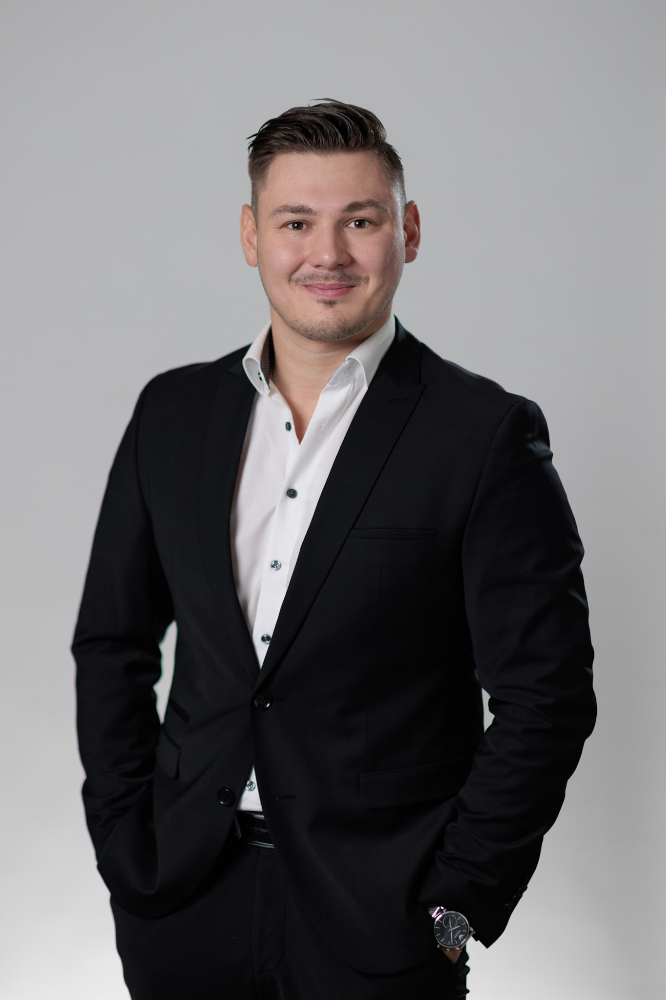

Robert
Dlugosch
Ich arbeite dort, wo Märkte erklärungsbedürftig, Entscheidungswege komplex und Vertriebszyklen anspruchsvoll sind – und bringe Struktur in die Frage, wo sich Geschäft sinnvoll entwickeln lässt.

Commercial clarity in complex B2B environments.
Mein Profil verbindet strategisches Business Development mit operativer Vertriebserfahrung. Ich bewege mich sicher zwischen Marktverständnis, anspruchsvollen Kundenstrukturen und der Frage, wie daraus ein belastbarer kommerzieller Ansatz entsteht.
Besonders relevant ist für mich die Arbeit in Umfeldern, in denen viele Stakeholder, technische Anforderungen und unterschiedliche Entscheidungslogiken zusammenkommen. Dort liegt meine Stärke darin, Komplexität zu reduzieren, Prioritäten sichtbar zu machen und daraus eine klare Vertriebsrichtung abzuleiten.
Four strengths that reinforce each other.
Meine Stärken liegen nicht in einzelnen Methoden, sondern in der Verbindung von Urteilsvermögen, Kundenverständnis, Positionierung und konsequenter Vertriebsführung.
Opportunity
Understand first. Focus deliberately. Execute clearly.
Meine Herangehensweise beginnt nicht mit einer fertigen Vertriebsschablone. Ich versuche zuerst zu verstehen, was im Markt wirklich zählt, wo ein Angebot glaubwürdig anschlussfähig ist und welche nächsten Schritte daraus sinnvoll werden.
Marktsignale, Kundenanforderungen und Rahmenbedingungen aufnehmen, bevor Lösungen oder Vertriebsbotschaften feststehen.
Aus vielen möglichen Richtungen die Themen und Organisationen priorisieren, bei denen Bedarf, Passung und Potenzial zusammenkommen.
Leistungsangebot und Kundenrealität so zusammenführen, dass eine klare, belastbare Vertriebsargumentation entsteht.
Mit klaren nächsten Schritten arbeiten, Rückmeldungen aus dem Markt aufnehmen und Vorgehen, Prozesse oder Angebot dort nachschärfen, wo es nötig ist.
Three examples of the role I tend to take.
Die Beispiele zeigen weniger einzelne Methoden als die Art von Verantwortung, die ich übernehme: Orientierung schaffen, komplexe Kunden entwickeln und Vertriebsarbeit belastbarer machen.
Creating Direction in KRITIS
Aus einem breiten Themenfeld eine fokussierte Marktbearbeitung entwickeln: relevante Teilmärkte eingrenzen, Kundenbedarf systematisch aufnehmen und daraus eine klare Richtung für Angebot, Kommunikation und Vertrieb ableiten.
Navigating Complex Accounts
Anspruchsvolle Corporate- und Public-Accounts in unterschiedlichen Branchen eigenständig entwickeln – mit Blick auf Entscheidungswege, relevante Ansprechpartner und die passende kommerzielle Ansprache.
Making Sales More Operable
Vertriebsabläufe zwischen Akquise, Presales, Closing und Customer Success schärfen, CRM-Strukturen mitentwickeln und durch Forecasting und Reporting mehr Transparenz in die operative Steuerung bringen.
Vom direkten Vertrieb zur strategischen Marktverantwortung.
Jede Station hat dem heutigen Profil eine andere Ebene hinzugefügt: Abschlussorientierung, Verantwortung für komplexe Kunden und schließlich die strategische Entwicklung eines Marktsegments.
Business Development Manager · Sector Lead KRITIS
- Verantwortung für den Aufbau und die Weiterentwicklung des KRITIS-Segments.
- Verbindung von Marktfeedback, Angebotsentwicklung und kommerzieller Positionierung.
- Steuerung der Marktbearbeitung von der strategischen Priorität bis zur konkreten Vertriebsansprache.
Sales Manager
- Eigenständige Verantwortung für anspruchsvolle Corporate- und Public-Accounts.
- Operative Steuerung über Forecast, Reporting und Pipeline sowie Weiterentwicklung interner Vertriebsabläufe.
- Zusätzliche Verantwortung durch Onboarding, Recruiting-Unterstützung und Vertretung der Vertriebsleitung.
Recruitment Consultant
- Fundament im vollständigen 360°-Sales-Prozess – von der Ansprache bis zum Abschluss.
- Arbeit mit technischen Mandaten und internationalen Industrie- und Maschinenbaukunden.
- Frühe Routine in Neukundenentwicklung, Verhandlung und eigenständiger KPI-Verantwortung.
Good business development reduces uncertainty.
Je klarer Markt, Kunde und Angebot zueinander passen, desto gezielter kann Vertrieb arbeiten.
Interesse an einem Austausch?
Offen für Gespräche zu Business Development, strategischem Vertrieb und anspruchsvollen B2B-Märkten.